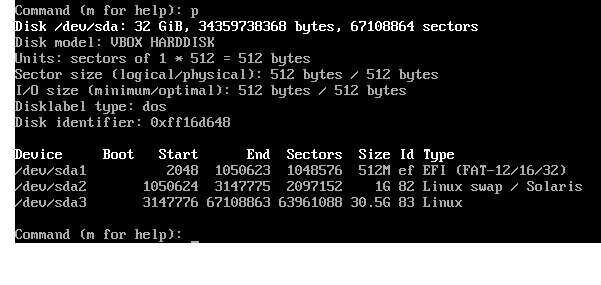

Introduction
This guide will walk you through the steps of installing the Arch Linux operating system. Arch is highly customizable and a popular choice among Linux users.
Throughout this book, commands that you have to execute are marked in code blocks with a dollar sign, like this:
$ ls
Note for testers
It's probably pretty difficult to implement these instructions during classtime (if you can, that'd be super cool and based), so follow along as best you can with the instructions as they're written.
Hardware Setup
In order to install Arch on your computer, the first thing you will need to do is disable Secure Boot. Secure Boot is a feature of your most recent computers that prevents them from running operating systems that weren't pre-approved by the manufacturer. This will require accessing your computer's firmware settings.
Accessing The Firmware Settings
If you are currently using Windows 10 or 11, there is a convenient way to access the firmware settings.
-
Search for "advanced startup" in the start menu.
-
Open the "Change Advanced Startup Settings" page.

- Click the button that says "Restart Now" next to "Advanced Startup."

Because Secure Boot is a manufacturer-specific feature, the steps to disable it depend on your specific brand of computer. We have compiled some instructions for common computer brands:
Download/Flash
Acquire an Arch Linux image file
The image file contains all you will need to perform the installation, so it is critical that when you download it, your download isn't interfered with.
To make sure of this, Arch provides checksums to make sure that the file you downloaded is the same file that you intended to download.
Downloading the file
From https://archlinux.org/download/ identify the closest mirror to your location.
From that mirror, download both the image file archlinux-x86_64.iso and the checksums sha256sums.txt
Verifying the checksum
You will need different tools to verify the checksum, depending on your current operating system.
Windows
$ CertUtil -hashfile archlinux-x86_64.iso SHA256
MacOS
$ sha356sum archlinux-x86_64.iso
Linux
$ shasum -a 256 archlinux-x86_64.iso
Flash the image file to a USB drive
Once you have the image file, you will need to flash it to a USB drive. We recommend using balena etcher to accomplish this, which you can download from https://www.balena.io/etcher.
Your USB drive will be erased during the flashing process, so make sure any important information has been stored elsewhere first.
Once your drive is ready to be flashed, insert it into your computer.
Then, run balena etcher and select archlinux-x86_64.iso as your image, and your USB drive as the drive.
After that, click "Flash" to start the flash process.
If there are no errors, your drive will no longer be readable by your operating system. This means that your drive is now bootable, and you can use it to install Arch Linux on any machine you'd like.
Installer
Once you reboot your computer, you should see this screen for a few seconds:
 Select
Select Arch Linux install medium and press enter.
This should also be the default value, so you can let GRUB automatically boot there if you'd like.
If you've booted into the live installation, you should see a splash screen like this:

If you see this, great! If not, try going through the previous instructions again, and if that doesn't work, have fun troubleshooting.
Check for UEFI
Check if you're in BIOS mode or EFI mode
$ ls /sys/firmware/efi/efivars
If you see this thing, great!

If you see this, oh no!

Try booting again, and look for options that indicate UEFI mode or BIOS mode.
Connect to the Internet
If you don't have ethernet, oh no! Anyways
Check your internet with the following commands:
$ ip link
$ ping www.example.com
The output should look like this:

To exit ping, press Ctrl-C on your keyboard.
In general, this sends a signal to your terminal to stop whatever program is currently running, and give control back to you.
Make sure the local time is correct
$ timedatectl

It will be in UTC by default, so don't worry if it doesn't match the time in your timezone. We will fix that later.
Disk Setup
Now we need to set up the disks for Arch.
To see what disks are present, run:
$ fdisk -l

Here we see two disks: /dev/sda and /dev/loop0.
Generally, your hard drive look like /dev/sda or /dev/nvme, and should be about the correct size.
Here, /dev/sda is 32 gigabytes, compared to /dev/loop0 which is only about 700 megabytes.
You will need to create a section on your disk for your root directory, /,
and for an EFI system partition.
$ fdisk /dev/whichever one is the size of your hard drive
This will enter the interactive disk partitioning utility, which should look something like this:

To create a new partition, you can press n.
You will want to create an EFI partition, so you can use the defaults until the tool asks you for the end location, where it will also provide the option to give a size instead.
Type +512MiB to comfortably pass the required minimum, while not overallocating space.
In total, your screen should look something like this:

Once you've created the new partition, it will be, by default, of type Linux.
Since we're aiming for a partition of type EFI, we'll need to change the type manually.
To do this, type t.
Since we've only made one partition so far, the default selection should be the partition you just created.
Next, you will need the hex code for the EFI partition type, which in this case is EF.
Enter this value into the tool, and it should put you back to the fdisk interpreter.
To make sure this worked as you expected, you should check the partition table with p.

Next, we'll need to provide some swap space.
This follows a similar procedure:
- Create a new partition with
n - Use the defaults until the tool asks for the size of the partition, at which point you can input
1024MiB - Change the type of the new partition with
t - Change the type to
swapspace, which has hex value82
Last, we'll partition the remainder of the drive.
Again, create a new partition with n, and now instead of giving a small amount of space, the defaults should be to allocate the remainder of the device.
Fortunately, we don't even need to change the type of the partition, since the default is already Linux space.
Now, your partition table (which you can check with p) should look like this:

If your partitition table looks the same, with maybe a varying amount of space for the partition labelled Linux, then you can write these changes and exit by pressing w.
If you have errors on exit, :(
TODO: emphasize how useful fdisk -l is
We recommend writing down the names of the partitions, which you can find with fdisk -l, as before.
In our case, we have /dev/sda1 as our EFI section, /dev/sda2 as our swap section, and /dev/sda3 as the remainder of the drive, containing most of the data.
File System Formatting
We are unfortunately not yet done with the partitions, since we still need to format them.
First, the EFI system partition needs to use the FAT file system.
TODO: Note this
Only format the EFI system partition if you created it during the partitioning step. If there already was an EFI system partition on disk beforehand, reformatting it can destroy the boot loaders of other installed operating systems.
$ mkfs.fat -F 32 /dev/efi_system_partition
The swap partition gets its own special format:
$ mkswap /dev/swap_partition
And then finally, your root directory can use EXT4, which is a fairly common kind of file system on Linux.
$ mkfs.ext4 /dev/root_partition
Mounting the File System
Now that we have a file system, we need to actually expose it as a directory on our machine.
$ mount /dev/root_partition /mnt
This command "mounts" the root partition we created earlier so that its contents
are accessible at the path /mnt.
Run mount(8) with the --mkdir option to create the specified mount point. Alternatively, create it using mkdir(1) beforehand.
$ mount --mkdir /dev/efi_system_partition /mnt/boot
This places the EFI system partition at a directory called boot
inside of our root directory. Later, we will set up a bootloader
that will search for this directory and use it to boot the operating system.
Finally, let's make sure our swap partition is actually enabled:
$ swapon /dev/swap_partition
Installation Installation
Packages to be installed must be downloaded from mirror servers, which are defined in /etc/pacman.d/mirrorlist. On the live system, after connecting to the internet, reflector updates the mirror list by choosing 20 most recently synchronized HTTPS mirrors and sorting them by download rate.
Mirror list is ok by default
Now that all of our directories are set up, we can... actually install the operating system to our disk!
$ pacstrap -K /mnt base linux linux-firmware
Because Arch is so customizable, this command really does only install the kernel itself. To actually use the system, you'll need some common tools.
$ pacstrap -K /mnt e2fsprogs vim nano man-db man-pages texinfo dhcpcd inetutils net-tools sudo vi
TODO: If you ever want to log in to wifi, oh no TODO: drivers???
Setting the File Systems Table (fstab)
If we want our root and boot directory to actually be mounted when we start the system, we will have to create a file that tells the bootloader to mount them.
$ genfstab -U /mnt >> /mnt/etc/fstab
Now, our system is functional enough to actually be used for commands. This command switches our root directory from the live installer to our newly installed system.
$ arch-chroot /mnt
The terminal should look slightly different after you run this command:

Setting the Timezone
Now we can actually set the correct time zone, as we promised earlier.
$ ln -sf /usr/share/zoneinfo/Region/City /etc/localtime
To see what the valid regions are, type in just the part up to /usr/share/zoneinfo/,
and then hit tab twice. It will list several available regions for you to use.
For example, the command to set EST as your timezone looks like:
$ ln -sf /usr/share/zoneinfo/America/New_York /etc/localtime
Then, we have to tell the system that we have updated the timezone.
$ hwclock --systohc
To double check that the time is correct, run date.
You should now see your correct local time!
Setting the locale
$ vim /etc/locale.gen
Search for en_US.UTF-8 in vim by typing / and then en_US.UTF-8, and finally press the escape key once you've found the line.
Vim should automatically find that text in the file.
To uncomment this, move the cursor left with either the left arrow key or by pressing h.
Once the cursor is hovering over #, press x to delete it, thereby uncommenting the line.
To exit vim, simply type :wq and press enter.
$ locale-gen
$ echo "LANG=en_US.UTF-8" > /etc/locale.conf
Network Time
pick a cool name for your computer something truly radical something totally tubular and then
no spaces no special characters either preferably just letters (capital letters and numbers are ok)
$ echo "notcringename" > /etc/hostname
Once you've set your hostname, try accessing the internet with ping:
$ ping www.example.com
if it doesn't work, good luck!
Set a root password
To install new programs or edit system files, you will need a password. Currently, there is no password set, which means you could accidentally change anything at any time which is bad.
Set a password.
$ passwd
Note that when typing in the password, you won't see anything appear on the screen. This is just to make sure that anyone watching won't see your password.
Install the Bootloader
$ pacman -S grub efibootmgr
efibootmgr is used by the GRUB installation script to write boot entries to NVRAM.
grub-install --target=x86_64-efi --efi-directory=/boot --bootloader-id=GRUB
There should be a message saying that the install was successful,
and you should be able to run ls /boot/grub and see some miscellaneous files there.
If not, good luck!
$ grub-mkconfig -o /boot/grub/grub.cfg
if you have done alllll of the preceeding steps correctly, now do
$ exit
$ umount -R /mnt
$ shutdown now
Now, remove the flash drive and turn your computer back on.
If you see GRUB:

That's good. If you hit enter, and you see this:

then (probably) everything worked!!
You can log in with username root and the password you set earlier.
Using the OS
Congratulations, you have installed Arch! Before you start exploring on your own, we have a few important steps.
1 Make a non-root user
The default user is root, which has all permissions at all times.
This means that it's easy to accidentally break your install by running the wrong command,
and is also a security risk.
To fix this, you can create your own user account using the useradd command.
$ useradd -m dragonlady
$ passwd dragonlady
As a reminder, when you type in your password, you will not see anything appear on screen.
1.1 Add yourself as a "sudoer"
By default, normal user accounts cannot do things like install software or change system files.
To temporarily give yourself higher permissions, you can use the sudo command.
To give your account access to the sudo command, you need to add yourself to the following file.
$ EDITOR=nano visudo
In nano, press Ctrl-w and then type root ALL to find the line containing the entry for the root user.
Directly below it, add the following line, substituting in whatever username you picked:
dragonlady ALL=(ALL:ALL) ALL
Once that's done, you can logout using the logout command and log back in as your new account.
Now, you can try running the following commands to make sure it worked:
$ whoami
$ sudo whoami
The first command should print out your username.
The second command will ask you for your password, and then print out root.

2 Enable Networking
To tell Arch to enable the networking service on startup, we can use systemctl enable.
If we rebooted the machine, it would start working on the next login.
However, we can tell Arch to start running the service immediately using systemctl start.
$ sudo systemctl enable dhcpcd.service
$ sudo systemctl start dhcpcd.service
$ ping www.example.com
Reminder: you can press Ctrl-c to stop ping once you see a few successful packets.
Installing packages
Now that you have an internet connection and the sudo command,
you could try installing some new software.
Most Linux distributions have a program called a package manager
that allows you to install, uninstall, and update software.
The package manager for Arch is called pacman.
To install packages, use the following command:
$ pacman -S package_to_install anotherpackage aThirdPackage
This system is very powerful:
even adding an entire windowed desktop environment can be done
just by installing some packages with pacman,
as you will see in the following step.
Desktop Environment
While the command line is one of the most versatile tools a Linux user has, graphical interfaces are still useful for a wide variety of tasks. There are several different desktop environments you could pick from, but we have found the simplest option to be using KDE Plasma with XOrg.
$ sudo pacman -S xorg-server xorg-apps xorg-xinit xterm xorg-fonts-100dpi xorg-fonts-75dpi autorandr
$ sudo pacman -S sddm plasma kde-applications plasma-nm ttf-dejavu ttf-liberation sddm
If all of the packages install successfully, then all you need to do to enable your new desktop environment is start the service:
$ sudo systemctl enable sddm
$ sudo systemctl start sddm